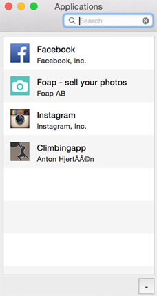

Welcome to the web site for App Reviews for Mac.
 App Reviews for Mac is an app that makes it super simple for Mac OS X users to keep track of user reviews for iPhone apps. App Reviews runs in the statusbar and notifies you when new reviews come in.
App Reviews for Mac is an app that makes it super simple for Mac OS X users to keep track of user reviews for iPhone apps. App Reviews runs in the statusbar and notifies you when new reviews come in.
If you like App Reviews, please consider making a donation. Feature requests, issues, or pull requests on the Open Source GitHub pages are also welcome.
Screenshots
